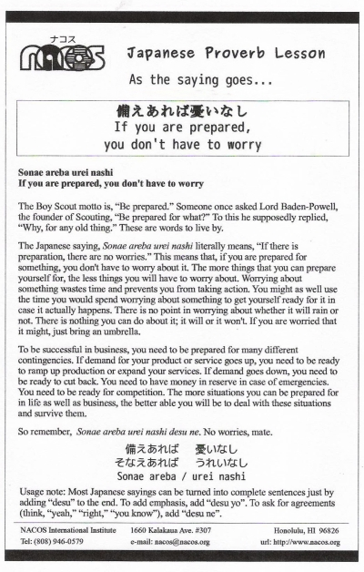

Sonaeareba urei nashi
If you are prepared, you don't have to worry
The Boy Scout motto is, “Be prepared.” Someone once asked Lord Baden-Powell, the founder of Scouting, “Be prepared for what?” To this he supposedly replied, “Why, for any old thing.” These are words to live by.
The Japanese saying, Sonae areba urei nashi literally means, “If there is preparation, there are no worries.” This means that, if you are prepared for something, you don't have to worry about it. The more things that you can prepare yourself for, the less things you will have to worry about. Worrying about something wastes time and prevents you from taking action. You might as well use the time you would spend worrying about something to get yourself ready for it in case it actually happens. There is no point in worrying about whether it will rain or not. There is nothing you can do about it; it will or it won't. If you are worried that it might, just bring an umbrella.
To be successful in business, you need to be prepared for many different contingencies. If demand for your product or service goes up, you need to be ready to ramp up production or expand your services. If demand goes down, you need to be ready to cut back. You need to have money in reserve in case of emergencies. You need to be ready for competition. The more situations you can be prepared for in life as well as business, the better able you will be to deal with these situations and survive them.
So remember, Sonae areba urei nashi desu ne. No worries, mate.
Usage note: Most Japanese sayings can be turned into complete sentences just by adding “desu” to the end. To add emphasis, add “desu yo”. To ask for agreements (think, “yeah,” “right,” “you know”), add “desu ne”.

| © 1995-2013 NACOS International Institute. All Rights Reserved. |